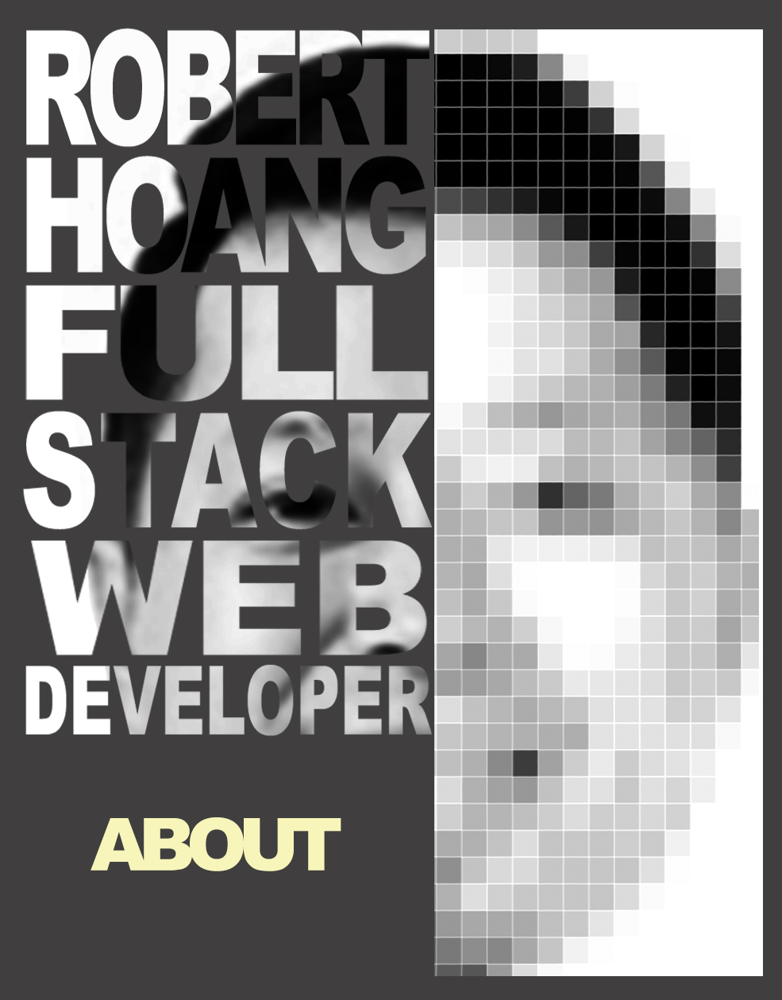

Throughout my life so far I have been a pretty conversative person. I do not mean conservative in a political sense, but in terms of the predictable progression of life events. I went to college straight after high school, and then immediately attended graduate school and started my working career. When I hit my mid 20s, I got tired of my hometown of Atlanta and moved to San Francisco. When I turned 31, I got married. When I was 37 years old, I finally became a father and my life would be changed forever. Things had to be shaken up in my life. Up to the day I decided to join a Coding Bootcamp for Web Development, I was starting to settle for my conservative life. I felt as though it was too late for a career change or to even think about changing careers. Could I risk starting all over again? Well, it all depended on my state of mind. Being a new father, I had to decide if I wanted to spend my free time with my daughter watching Bubble Guppies 2 hours a day, or use that time to reinvent myself and provide her with a life lesson for later. I wish it could do both, but the demands of the bootcamp won't allow it. In March, I know it will be worth it, and I look forward to opening up a world of possibilities with the new skills I will acquire.

Robert Hoang
